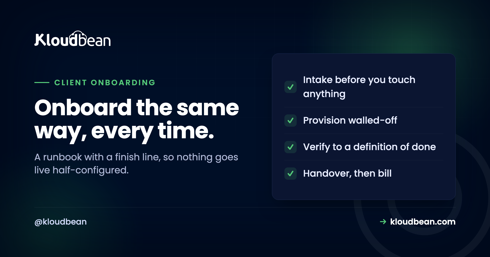

Agency Client Onboarding Checklist: The Runbook, Not the Theory

Every agency onboards clients, and most do it slightly differently every time, which is why sites go live with SSL half-configured, backups not actually running, and a client who still cannot log in to see anything. Onboarding is the most repeated operation you have, so it is the one that most deserves a runbook. This is that runbook: the phases, the intake list to collect before you touch anything, the verification checks that define "done", and the handover email that shapes how the client feels about the whole thing. The strategy behind these choices lives in the agency playbook's onboarding phase; this page is the doing.
Six phases, run the same way every time. Intake (collect domain, DNS, existing host, and access before you start). Provision (a new walled-off environment, not a folder on a shared box, with a scoped client login). Build or migrate the site. Verify against a concrete definition of done: SSL present and auto-renewing, backups actually running, staging in place, monitoring on, and the client's scoped access created. Handover with a short email the client understands. Set up billing. The point of writing it down is that onboarding gets a finish line, so nothing goes live half-configured.
Phase 1: Intake, before you touch anything
Most onboarding pain is caused by starting the technical work before you have what you need, then stalling halfway to chase a DNS login. Collect all of this first.
| Collect | Why you need it up front |
|---|---|
| Primary domain and any redirects (www, other TLDs) | Decides the site config and the SSL you will issue |
| Access to the DNS / registrar | The go-live cutover is a DNS change; chasing it later stalls launch |
| Current host and how the site is accessed (SFTP, panel, Git) | Decides the migration path |
| The stack (WordPress, Laravel, Node, static) and any versions | Decides the environment you provision |
| Who on the client side gets a login, and at what level | Decides the scoped roles you create at provision time |
| Any compliance or data-residency requirement | Decides which cloud and region you place them on |
The DNS access line is the one that saves the most grief. A launch is ultimately a DNS change, and discovering at go-live that nobody has the registrar login turns a ten-minute cutover into a three-day wait. Confirm you can make that change before you promise a date.
Phase 2: Provision a walled-off environment
A new client is a new isolated environment, not a directory alongside another client's files. This is the single decision that keeps one client's problem from becoming everyone's.
- Create the client's environment on the appropriate cloud and region from intake.
- Give it its own database and its own credentials, never shared with another client.
- Create the client's scoped login now, not at handover, so it is tested before they use it. A view-only role for the client, a working role for the developer, using the model in the subusers and UAC guide.
- Confirm the environment is isolated from your other clients at the server level, the point of hosting multiple apps on one server safely.
Phase 3: Build or migrate the site
Either you are launching something new or moving an existing site in. If it is a migration, do it onto a staging copy first so the client's current site keeps serving until you cut over.
- Bring the files and database across. For an existing site, free migration assistance can do the heavy lifting; the mechanics are in migrating hosting without downtime.
- Stand it up on staging and check it renders, logs in, and processes a test action before any DNS moves.
- Set environment variables and secrets on the server, not in the code, per environment variables done right.
- Wire any scheduled tasks the site needs from the dashboard rather than hand-editing crontab.
Phase 4: Verify against a definition of done
This is the phase agencies skip and regret. "The site loads" is not done. Done is a checklist, and here it is. Run these checks and do not hand over until every one passes.
# SSL present and valid, and it should auto-renew (not a one-off cert)
curl -sI https://clientsite.com | grep -i "^HTTP\|strict-transport"
echo | openssl s_client -connect clientsite.com:443 2>/dev/null | openssl x509 -noout -dates
# The site resolves to YOUR server, not the old host
dig +short clientsite.com
# A backup has actually run, not just been "enabled"
# (confirm the most recent automatic backup exists and its timestamp is recent)
# The client's scoped login works and sees only their own resources
# The staging environment exists and is reachable by your team| Definition of done | Pass looks like |
|---|---|
| HTTPS works and renews itself | Valid cert, auto-renew on, HTTP redirects to HTTPS |
| Backups are running | A recent automatic backup exists, and you have done one test restore |
| Staging exists | A staging copy your team can push changes to first |
| Monitoring is on | You are alerted if the site goes down, before the client notices |
| Client access created | Their scoped login works and sees only their site |
| DNS fully cut over | All hostnames, including www, resolve to the new server |
The backup line deserves emphasis: "enabled" is not "running", and neither is a real backup until you have restored one. Do the first test restore during onboarding, while it is nobody's emergency, not during the first real incident. The reasoning is in the backups guide.
Phase 5: Handover, which is mostly one email
The client does not see your provisioning work. They see the email you send when it is live, and that email is their entire impression of how professional the onboarding was. Keep it short, concrete, and free of jargon.
Subject: [Site] is live and set up
Hi [name],
[Site] is live at https://clientsite.com. A few things we've set up so
you don't have to think about them:
- HTTPS is on and renews automatically.
- Automatic backups are running, and we've tested a restore.
- We're monitoring uptime and will know before you do if anything dips.
Your login: [scoped portal link]. You can view your site's status here.
For any change, just reply to this email and we'll handle it.
[Your name]Notice what the email does: it lists outcomes the client cares about (secure, backed up, watched) rather than tasks you performed, and it sets the support channel. That is the whole handover.
Phase 6: Set up billing
Onboarding is not finished until the recurring invoice exists, because an unbilled client is a favour, not a customer. Assign them to the right plan, give their finance contact a billing-only login if they need one, and start the recurring charge. The pricing model behind this is in client billing and markup for hosting.
The onboarding mistakes worth naming
Patterns that turn a clean onboarding into a support ticket a month later.
Starting before intake is complete. The stall-at-DNS problem above. Collect access first, always.
Treating "enabled" as "working". A backup toggle switched on is not a tested restore. Monitoring configured is not monitoring you have seen fire. Verify the thing actually does its job once, during onboarding.
Creating client access at handover. If the client's first login attempt is also the first time it has ever been used, you are debugging access live in front of them. Create and test it during provisioning.
No finish line. Without a definition of done, "done" means "I ran out of time today", and the gaps surface as incidents. The checklist is the finish line.
Where hosting fits, honestly
A runbook is only as repeatable as the platform under it. What makes this checklist fast rather than a two-day ordeal is having the pieces in one place: a new isolated environment provisioned from one account, scoped client logins, staging for WordPress and Laravel so you build safely, automatic backups and free auto-renewing SSL so two of your definition-of-done checks are satisfied by default, and free migration assistance when a client is coming from elsewhere. Seven clouds and regions to place a client on when intake turns up a residency requirement. All from the one dashboard, which is what lets onboarding be a checklist rather than a tour of five separate control panels.
The honest boundary: the platform makes the steps fast and consistent, but the runbook is yours to run. Collecting intake, deciding who gets which login, and sending a handover email that sounds like a person are the parts only you can do, and they are most of what the client actually experiences.
Related reading
The other bookend is the agency client offboarding runbook, for when a client eventually leaves. The strategy behind both is the hosting for agencies playbook, and the scale picture is how agencies host 20 client apps on one server. The access step is the subusers and UAC guide; the isolation step is hosting multiple apps on one server. Migration in is migrating hosting without downtime, the verify step leans on the backups guide, and the billing step is client billing and markup.
Onboard every client the same way, fast.
Provision an isolated environment, scoped logins, staging, automatic backups, and free auto-renewing SSL from one account across seven clouds. Free migration assistance to bring a client's site in. Start at kloudbean.com or see pricing.
Isolated environments · Scoped logins · Staging · Automatic backups · Free SSL · Free migration
FAQ
What should be on an agency client onboarding checklist?
Six phases: intake (collect domain, DNS access, current host, stack, and who gets a login before you start), provision an isolated environment with a scoped client login, build or migrate the site on staging, verify against a definition of done, hand over with a short email, and set up recurring billing. The verification phase is the one that matters most, because it is the finish line that stops sites going live half-configured.
What should I collect from a client before starting?
The primary domain and any redirects, access to their DNS or registrar, their current host and how the site is accessed, the stack and versions, who on their side needs a login and at what level, and any compliance or data-residency requirement. The DNS access is the critical one: a launch is a DNS change, and discovering nobody has the registrar login at go-live turns a ten-minute cutover into a multi-day wait.
What is a good definition of done for a website launch?
HTTPS works and renews itself with an HTTP-to-HTTPS redirect, a recent automatic backup exists and you have tested a restore, a staging copy is in place, uptime monitoring is on, the client's scoped login works and sees only their site, and every hostname including www resolves to the new server. If any of those fails, onboarding is not finished, regardless of whether the site loads.
Why create the client's login during provisioning rather than at handover?
So it is tested before the client uses it. If their first ever login attempt is also the first time that access has been exercised, you end up debugging permissions live in front of them, which is the opposite of a confident handover. Create the scoped role early and confirm it sees only what it should.
Should I migrate a client's existing site straight to production?
No, migrate onto a staging copy first so their current site keeps serving until you have verified the new one. Bring the files and database across, confirm the site renders and processes a test action, then cut DNS over. This is what keeps a migration from being visible to the client's visitors.
How is this different from the agency playbook?
The playbook covers the strategy and the why across the whole agency operation, with onboarding as one phase. This page is the operational runbook for that phase: the actual repeatable steps, the intake list, the verification commands, and a handover email template you can use directly. Read the playbook for the reasoning, use this to execute.
What is the most common onboarding mistake?
Treating "enabled" as "working". A backup toggle switched on is not a tested restore, and monitoring configured is not monitoring you have seen fire. The fix is to verify each safety net actually does its job once during onboarding, while it is nobody's emergency, rather than discovering during a real incident that it never worked.
Can I standardise onboarding across different stacks?
Yes. The six phases are the same whether the client runs WordPress, Laravel, Node, or a static site; only the build-or-migrate step changes with the stack. Keeping the phases and the definition of done constant is what makes onboarding repeatable even when the sites are not identical.